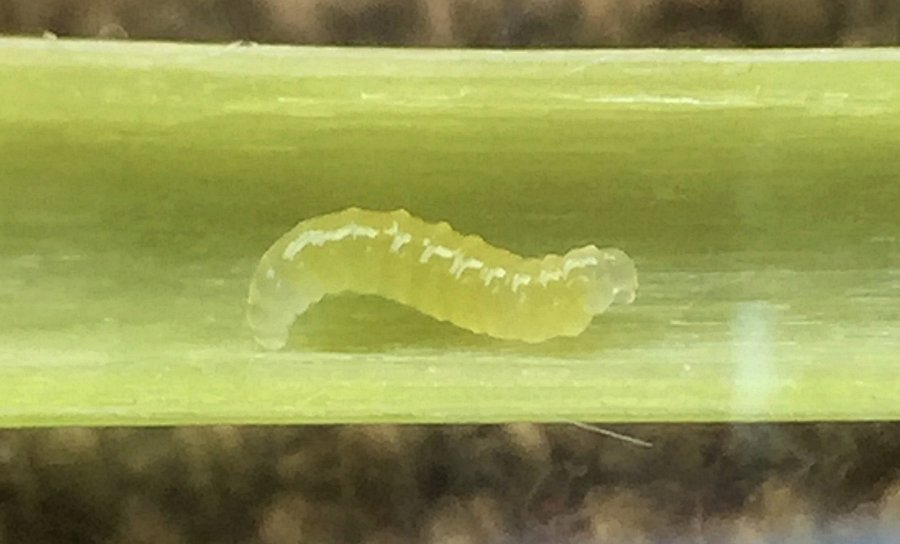
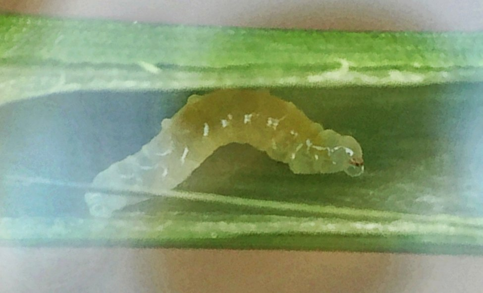
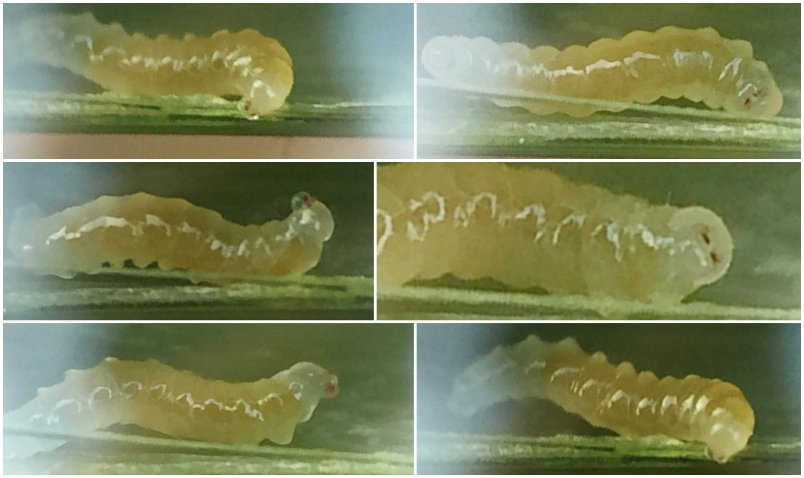

Local feeder (Hymenoptera) in stems of Phalaris
| Record no.: | 0699 |
|---|---|
| Feeding guild: | Local feeder in stem |
| Taxonomy: | Hymenoptera: cf. Eurytomidae: Tetramesa sp. |
| Stages observed: | trace, larva |
| Distribution observed: | IA |
| Hosts in Phalaris: | P. arudinacea (reed canary grass) |
I found several of these larvae in culms of reed canary grass in mid-August. They were yellowish-white with dorsal ampullae, and they moved about freely and actively in the hollow stem interiors. I could not be sure of their identity beyond order level, but they looked similar to apparent or confirmed Tetramesa larvae (Eurytomidae) I encountered in stems of other hosts during the survey.
Tetramesa longicornis and T. tibialis have been previously recorded from Phalaris in North America (Phillips and Poos 1922; Krombein et al. 1979; UCD Community 2023). T. longicornis was reared from stems of P. arudinacea in New York, and both T. longicornis and T. tibialis were reared from overwintered dead stems of P. sp. in South Dakota (Phillips and Poos 1922).

 Prev
Prev
{kind=link}
{kind=link}

{kind=link}

- Krombein, K.V., Hurd, Jr., P.D., Smith, D.R., and B.D. Burks. 1979. Catalog of Hymenoptera in America north of Mexico. Smithsonian Institution Press.[return to in-text citation]
- Phillips, W.J. and F.W. Poos. 1922. Five new species belonging to the genus Harmolita Motschulsky (Isosoma Walker et Auct). The Kansas University Science Bulletin 14(13): 349-359.[return to in-text citation][return to in-text citation]
- UCD Community. 2023. Universal Chalcidoidea Database Website. Retrieved June 4, 2026 from https://ucd.chalcid.org.[return to in-text citation]
Page created: June 4, 2026. Last update: June 4, 2026